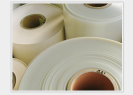

HOME > 製品情報・絶縁材料 > 絶縁紙・絶縁布・絶縁フィルム


| 種類 | 構造、材質、用途、特徴 | 品種、品番等 |
|---|---|---|
| ノーメックス®ペーパー | 原料アラミドにより優れた耐熱性を持つ。電機絶縁用途で広く採用され、変圧器の層間やバリアーに使用、ウエッジにも加工される。UL規格で220℃での連続使用が認められている。 | タイプ410、411他 2mil、5mil、7mil、10mil、20mil、30mil等標準 |
| ポリイミドフイルム | 透明感のある黄金色フイルム。耐熱、耐寒性にすぐれ、電機絶縁性は高い。絶縁破壊電圧と電気特性を持ち温度変化にも耐えられる。 | Hタイプ100H、200H、300H、500H |
| ポリエステルフイルム | 絶縁耐力が大きくすぐれた耐熱性、モーター、トランス、コンデンサー等の電気絶縁として広く使用されています。 | 原反から小分けまで可能。厚さは0.025～0.5まで取り揃えております。 |
| プレスボード | 原料クラフトパルプ100%。電力用、産業用変圧器などの絶縁材料として使用されます。 | 一般タイプ2種PB2 耐熱タイプもございます。 |
| ファイバー | 原料の木材繊維、木綿繊維から原紙を作り積層処理を経て出来た強靭な素材。絶縁性、耐油性、耐熱性、耐摩耗性等に優れ、弱電、重電、各種電気機器等に幅広く使用される。 | 難燃タイプNF-77 バルカナイズドファイバー 一般タイプもございます |
| クラフト紙 | パルプをを原料とした強度が高い紙。広く一般に用いられるが、引っ張り強度が強く丈夫なので絶縁材料としても用いられる。 | 非粘着です。スリット加工も可能です。 |
| ワニスクロス、ワニスガラスクロス | 綿、テトロン、ガラス等を基材としてワニスを塗布乾燥させています。電気絶縁を要する所へ使用します。回転機や層間絶縁として最も使用されています。 | 非粘着です。スリット加工も可能です。 |
| NTN | ノーメックス®と各種フイルム、両材料の優れた特長を活かすことのできる複合貼り合せ材料。 | 非粘着です。スリット加工も可能です。 |
| フイルム貼り合せ商品 | ポリエステルフイルム＋プレスボード、ポリエステルフイルム+クラフト紙等、組み合わせによりにより厚みのバリエーションがございます。 | 非粘着です。スリット加工も可能です。 |
| 高周波クロス | 基材は綿。主に皮革製品、ポリエステル生地、ウレタンフイルム、その他のラミネーター製品等の熱溶着による接着時に使用する事が多い。 | HFC、EAHFC等 |
デュポン帝人アドバンスペーパー（株）、東レデュポン（株）、北越紀州製紙（株）、三木特殊製紙（株）、ニッカン工業（株）、
日東シンコー（株）、日立化成工業（株）、東洋ファイバー（株）、豊新物産（株）
記載されていない商品でもまずは弊社までお問い合わせ下さい。
各メーカーから御希望の材料をお探しいたします。